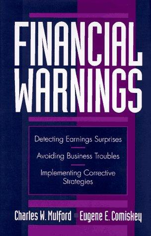

查尔斯·穆尔福德（Charles W. Mulford）与尤金·科米斯基（Eugene E. Comiskey）均为佐治亚理工学院（Georgia Institute of Technology）的会计学教授，两人长期合作研究财务报表分析与盈利质量问题。穆尔福德后来担任佐治亚理工学院财务分析实验室主任，科米斯基则是该校Scheller商学院的资深教授。《财务预警》（Financial Warnings）出版于1996年，由Wiley出版社发行。这本书是两位学者将数十年学术研究与企业案例分析凝练而成的综合性指南，旨在帮助投资者、分析师和管理者在财务危机全面爆发之前识别出预警信号。它与两人后来出版的《创意现金流报告》（Creative Cash Flow Reporting，2005年）形成姊妹篇，共同构成了一套完整的财务报表分析体系。
全书系统性地梳理了企业财务报表中可能隐藏的各类风险信号。穆尔福德和科米斯基将预警指标分为几大类别：收入确认异常——包括提前确认收入、渠道填塞、使用完工百分比法时的激进估计等；费用处理问题——如将经营性支出资本化以推迟确认、滥用准备金进行利润平滑、通过改变折旧方法或延长资产使用寿命来降低当期费用；资产负债表信号——应收账款增速持续超过收入增速、存货周转率下降、商誉和无形资产占比异常膨胀；现金流质量——经营性现金流与净利润之间持续背离、资本支出与折旧摊销之间的异常关系。两位作者强调，单一指标的异常可能有合理的商业解释，但多个预警信号同时出现时，投资者应当高度警惕。
本书的一大特色是其丰富的真实案例。穆尔福德和科米斯基从数十年的公开财务报告中提取了大量实例，展示了企业如何通过合法但激进的会计选择来粉饰业绩，以及这些做法如何在事后被证明是更大问题的前兆。书中涉及的案例横跨制造业、零售业、科技行业和金融服务业，使读者能够看到不同行业中财务风险的不同表现形式。两位作者还专门讨论了如何将预警分析转化为行动策略——无论是作为外部投资者决定是否卖出持仓，还是作为内部管理者实施纠正措施。
对于价值投资者和基本面分析者而言，《财务预警》的重要性在于它提供了一套在财务灾难发生之前就识别风险的方法论。本杰明·格雷厄姆（Benjamin Graham）强调的"安全边际"原则，其前提是投资者必须能够准确评估一家企业的真实财务状况，而这恰恰是穆尔福德和科米斯基所致力解决的问题。在安然、世通等重大会计丑闻爆发之前，书中描述的许多预警信号其实已经清晰可见——问题在于大多数投资者缺乏识别它们的训练和框架。这本书与奥格洛夫的《盈利质量》、霍华德·施利特的《财务诡计》共同构成了英语世界财务分析领域的经典三角，是认真对待财务报表分析的投资者不可绕过的参考文献。